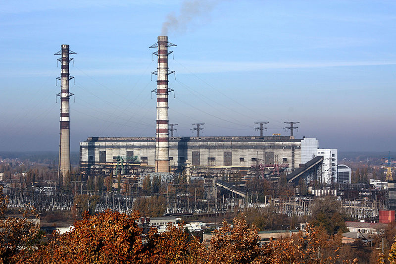

Трипільська ТЕС

Трипільська ТЕС — найпотужніша електростанція на Київщині.
Київська область належить до енергонасичених районів. На її території розміщені енергогенеруючі
підприємства загальною потужністю 3 200 МВт, з яких встановлена потужність Трипільської ТЕС
становить близько 57%. Відтак енергогенеруюче підприємство — є найбільшим постачальником
електроенергії у Київську, Черкаську та Житомирську області. Підприємство займає площу 281,3 га.
розташоване в Обухівському районі на березі Канівського водосховища.
Основні засоби Трипільської ТЕС — 4 пилевугільних і 2 газомазутних блоків потужністю по 300 МВт
кожний. Шість турбін та генераторів загальною номінальною потужністю 1800 МВт. Трансформатори типу —
ТДЦ-400000/330. Паливне господарство складається з відкритого складу вугілля місткістю 280 тис. т, що
обслуговується двома портальними кранами і бульдозерами. Основним паливом служить донецький
антрацитовий штиб, що надходить по залізниці і по річці до причалу станції.
Станція під'єднана до газово-транспортної системи України. Також паливне господарство
має ємності для використання як палива мазуту.
ЕКОЛОГІЧНИЙ КАЛЬКУЛЯТОР ВИКИДІВ